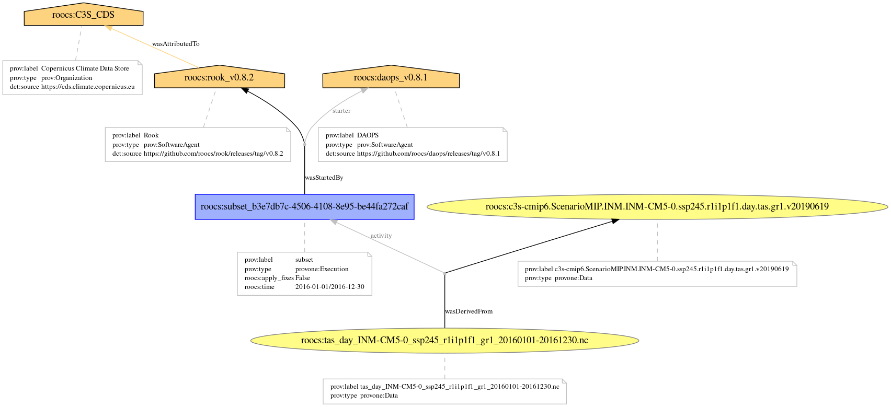

Rooki: run subset operation on remote service
Rooki: run subset operation on remote service#
Rooki calls climate data operations on the rook processing service.
import os
os.environ['ROOK_URL'] = 'http://rook.dkrz.de/wps'
from rooki import rooki
parameters of subset operation
rooki.subset?
run subset
resp = rooki.subset(
collection='c3s-cmip6.ScenarioMIP.INM.INM-CM5-0.ssp245.r1i1p1f1.day.tas.gr1.v20190619',
time='2016-01-01/2016-12-30',
)
resp.ok
True
Size in MBytes
resp.size_in_mb
18.07394504547119
URLs in metalink document …
resp.download_urls()
['http://rook4.cloud.dkrz.de:80/outputs/rook/95ddf390-1a13-11ed-a43f-fa163ed6c06f/tas_day_INM-CM5-0_ssp245_r1i1p1f1_gr1_20160101-20161230.nc']
download files …
resp.download()
Downloading to /var/folders/qb/mg0csz190wd4rxybhhnwjln80000gn/T/metalink_g5c7seep/tas_day_INM-CM5-0_ssp245_r1i1p1f1_gr1_20160101-20161230.nc.
['/var/folders/qb/mg0csz190wd4rxybhhnwjln80000gn/T/metalink_g5c7seep/tas_day_INM-CM5-0_ssp245_r1i1p1f1_gr1_20160101-20161230.nc']
… and open with xarray
dsets = resp.datasets()
Already downloaded tas_day_INM-CM5-0_ssp245_r1i1p1f1_gr1_20160101-20161230.nc.
ds = dsets[0]
ds
<xarray.Dataset>
Dimensions: (time: 364, bnds: 2, lat: 120, lon: 180)
Coordinates:
* time (time) object 2016-01-01 12:00:00 ... 2016-12-30 12:00:00
* lat (lat) float64 -89.25 -87.75 -86.25 -84.75 ... 86.25 87.75 89.25
* lon (lon) float64 0.0 2.0 4.0 6.0 8.0 ... 352.0 354.0 356.0 358.0
height float64 2.0
Dimensions without coordinates: bnds
Data variables:
time_bnds (time, bnds) object 2016-01-01 00:00:00 ... 2016-12-31 00:00:00
lat_bnds (lat, bnds) float64 -90.0 -88.5 -88.5 -87.0 ... 88.5 88.5 90.0
lon_bnds (lon, bnds) float64 -1.0 1.0 1.0 3.0 ... 355.0 357.0 357.0 359.0
tas (time, lat, lon) float32 ...
Attributes: (12/47)
Conventions: CF-1.7 CMIP-6.2
activity_id: ScenarioMIP
branch_method: standard
branch_time_in_child: 60225.0
branch_time_in_parent: 60225.0
contact: Evgeny Volodin (volodinev@gmail.com)
... ...
title: INM-CM5-0 output prepared for CMIP6
tracking_id: hdl:21.14100/89cab4a2-c867-4bb5-a215-622f969cd844
variable_id: tas
variant_label: r1i1p1f1
license: CMIP6 model data produced by Lawrence Livermore P...
cmor_version: 3.4.0ds.attrs
{'Conventions': 'CF-1.7 CMIP-6.2',
'activity_id': 'ScenarioMIP',
'branch_method': 'standard',
'branch_time_in_child': 60225.0,
'branch_time_in_parent': 60225.0,
'contact': 'Evgeny Volodin (volodinev@gmail.com)',
'creation_date': '2019-06-18T15:27:34Z',
'data_specs_version': '01.00.29',
'experiment': 'update of RCP4.5 based on SSP2',
'experiment_id': 'ssp245',
'external_variables': 'areacella',
'forcing_index': 1,
'frequency': 'day',
'further_info_url': 'https://furtherinfo.es-doc.org/CMIP6.INM.INM-CM5-0.ssp245.none.r1i1p1f1',
'grid': 'gs2x1.5',
'grid_label': 'gr1',
'history': '2019-06-18T15:27:33Z ;rewrote data to be consistent with ScenarioMIP for variable clt found in table day.',
'initialization_index': 1,
'institution': 'Institute for Numerical Mathematics, Russian Academy of Science, Moscow 119991, Russia',
'institution_id': 'INM',
'mip_era': 'CMIP6',
'nominal_resolution': '100 km',
'parent_activity_id': 'CMIP',
'parent_experiment_id': 'historical',
'parent_mip_era': 'CMIP6',
'parent_source_id': 'INM-CM5-0',
'parent_time_units': 'days since 1850-01-01',
'parent_variant_label': 'r1i1p1f1',
'physics_index': 1,
'product': 'model-output',
'realization_index': 1,
'realm': 'atmos',
'references': 'RJNAMM 2018, 367-374. DOI: 10.1515/rnam-2018-0032',
'run_variant': 'standard',
'source': 'INM-CM5-0 (2016): \naerosol: INM-AER1\natmos: INM-AM5-0 (2x1.5; 180 x 120 longitude/latitude; 73 levels; top level sigma = 0.0002)\natmosChem: none\nland: INM-LND1\nlandIce: none\nocean: INM-OM5 (North Pole shifted to 60N, 90E. 0.5x0.25; 720 x 720 longitude/latitude; 40 levels; vertical sigma coordinate)\nocnBgchem: none\nseaIce: INM-ICE1',
'source_id': 'INM-CM5-0',
'source_type': 'AOGCM AER',
'sub_experiment': 'none',
'sub_experiment_id': 'none',
'table_id': 'day',
'table_info': 'Creation Date:(20 February 2019) MD5:951084b632bd52c3f6224e495b1cb65e',
'title': 'INM-CM5-0 output prepared for CMIP6',
'tracking_id': 'hdl:21.14100/89cab4a2-c867-4bb5-a215-622f969cd844',
'variable_id': 'tas',
'variant_label': 'r1i1p1f1',
'license': 'CMIP6 model data produced by Lawrence Livermore PCMDI is licensed under a Creative Commons Attribution ShareAlike 4.0 International License (https://creativecommons.org/licenses). Consult https://pcmdi.llnl.gov/CMIP6/TermsOfUse for terms of use governing CMIP6 output, including citation requirements and proper acknowledgment. Further information about this data, including some limitations, can be found via the further_info_url (recorded as a global attribute in this file) and at https:///pcmdi.llnl.gov/. The data producers and data providers make no warranty, either express or implied, including, but not limited to, warranties of merchantability and fitness for a particular purpose. All liabilities arising from the supply of the information (including any liability arising in negligence) are excluded to the fullest extent permitted by law.',
'cmor_version': '3.4.0'}
provenance
prov_plot_url = resp.provenance_image()
prov_plot_url
'http://rook4.cloud.dkrz.de:80/outputs/rook/929f046c-1a13-11ed-a4c5-fa163ed6c06f/provenance.png'
from IPython.display import Image
Image(prov_plot_url)
